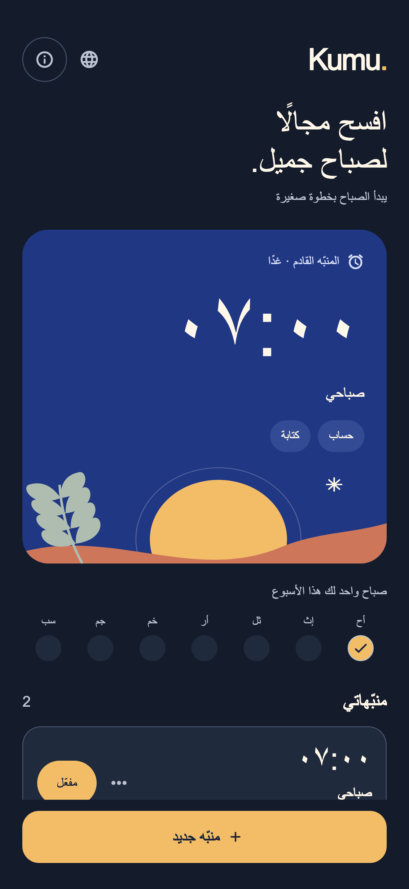
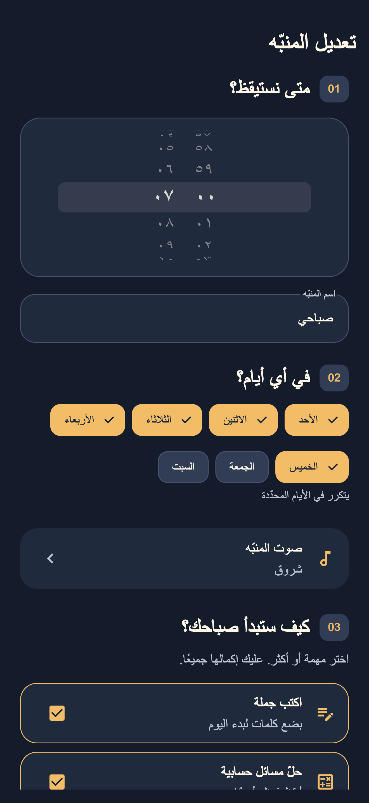
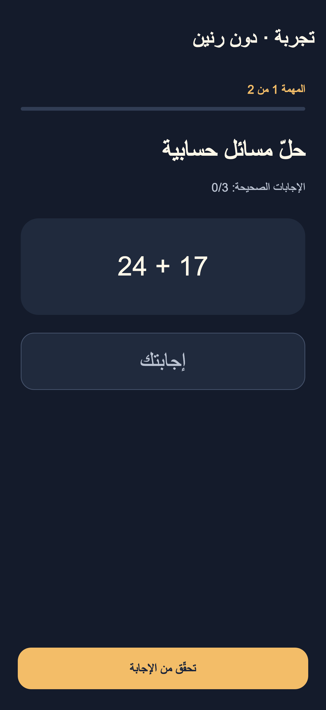

اختر لحظتك
وقتك وأيامك وثمانية أصوات للاختيار. كل شيء في مكان واحد.
يبدأ الصباح بخطوة صغيرة
منبّه بمهام بسيطة تساعدك على النهوض. اختر وقتك وصوتك والخطوة الأولى في يومك.
متاح الآن على App Storeللـ iPhone · بنظام iOS 26 أو أحدث

التحديث الذي يضيف العربية والروسية واختيار لغة التطبيق متاح الآن على App Store. تعرض لقطات الشاشة بيانات توضيحية.
01 / خطوات الصباح
كل صباح مختلف. وطريقة استيقاظك يمكن أن تكون كذلك أيضًا.
وقتك وأيامك وثمانية أصوات للاختيار. كل شيء في مكان واحد.
اكتب جملة تختارها، أو حلّ بعض المسائل، أو جرّب مهمة التصوير التجريبية. اختر مهمة واحدة أو اجمع عدة مهام.
أكمل المهام داخل التطبيق لإنهاء الاستيقاظ وإلغاء التنبيهات الاحتياطية.
02 / نظرة أقرب
إعدادات بسيطة. مهام واضحة. مساحة لصباح يناسبك.


03 / الخصوصية من البداية
دون حساب أو إعلانات أو أدوات تتبّع. تُعالج صورة المهمة على iPhone، ولا تُحفظ ولا تُرسل إلى المطوّر.
اقرأ سياسة الخصوصية ↗استخدم منبّهًا احتياطيًا مستقلًا للمواعيد المهمة. يعتمد عمل المنبّه على جهازك وإعداداته؛ ولا يمكن ضمان الاستيقاظ. معلومات الاستخدام الآمن
نعم. يتيح iOS إيقاف التنبيه عبر أزرار النظام. يجدول Kumu. تنبيهات احتياطية كل دقيقة لمدة 30 دقيقة قادمة، ويجدّد هذه المدة أثناء أداء المهام. إذا بقي التطبيق مغلقًا مدة أطول، فقد تنتهي سلسلة التنبيهات الاحتياطية.
التقط صورة للمرحاض للتعرّف عليه على الجهاز. هذه الميزة تجريبية. بعد ثلاث محاولات غير ناجحة، أو إذا كانت الكاميرا أو ميزة التعرّف غير متاحة، يمكنك الانتقال إلى خمس مسائل حسابية بديلة.
Kumu. مخصّص للـ iPhone بنظام iOS 26 أو أحدث. التحديث متاح الآن على App Store ويدعم العبرية والإنجليزية والروسية والعربية واختيار اللغة يدويًا. تكون اللغة الافتراضية العربية أو الروسية أو العبرية بحسب اللغة الرئيسية للهاتف، والإنجليزية في الحالات الأخرى.
Kumu. متاح الآن على App Store. عرض Kumu على App Store ↗
KUMU. / صباح جميل، من جديد.
خذ الخطوة الأولى نحو صباحك. متاح الآن على iPhone.
صباحك يبدأ هناتنزيل من App Store